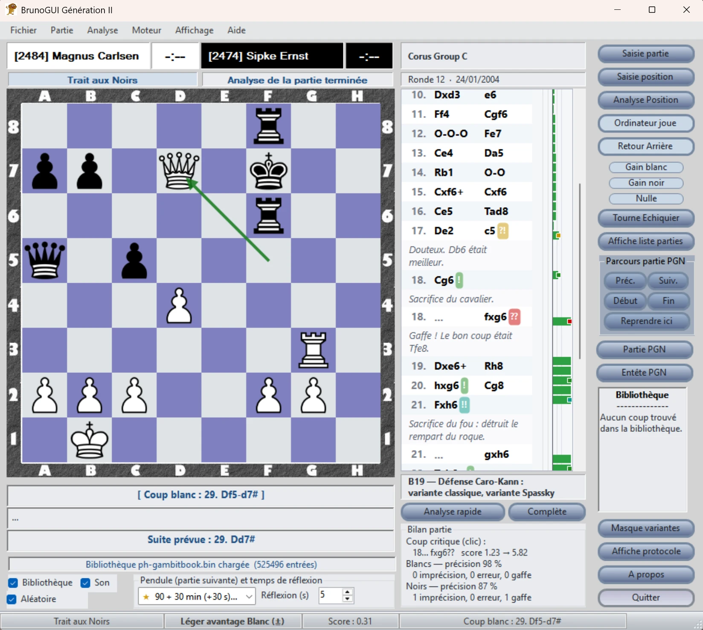

BrunoGUI
Analyse your chess games and play against the computer, for free
For Windows 10 and 11 · free software · in English and French
Install in 3 steps
- Download the zip (button above).
- Before extracting it: right-click the zip > Properties > tick “Unblock” > OK.

- Extract it wherever you like, then run
BrunoGUI_GenII.exe.
Nothing else to install. To uninstall, just delete the folder. The program starts in the language of Windows (menu View > Language to change it).
If Windows still shows “Windows protected your PC”, click “More info”, then “Run anyway”. The program, which is free, is simply not digitally signed: this warning does not indicate a problem.
What you can do
- Analyse your games: inaccuracies, mistakes, blunders and good moves, accuracy in %, sacrifices, threats, opening name.
- Import your games from Lichess or Chess.com from your username.
- “What if I had played another move?”: try another line and see what the engine thinks of it.
- PGN files: open, annotate, comment and save your games; copy a position as an image for a forum or an email.
- Play against Stockfish or Rodent IV at your level (Elo setting), with or without a clock.
- Face champions' styles: Tal, Petrosian, Fischer, Kasparov…
